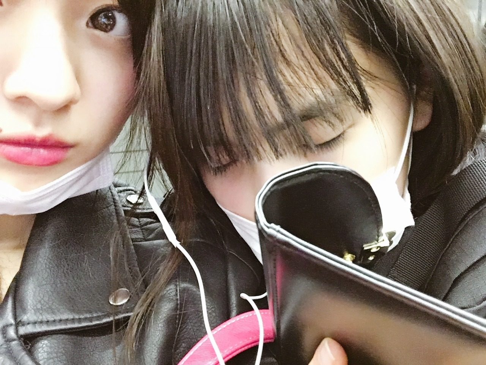
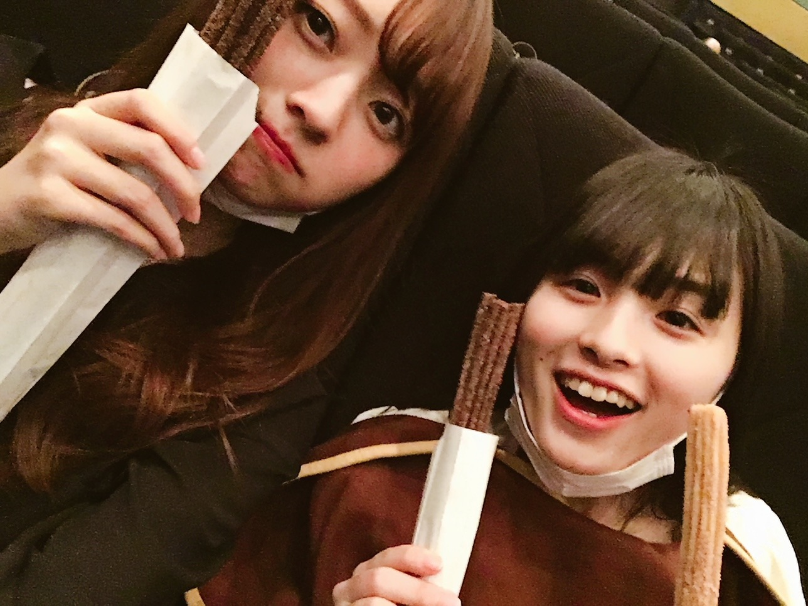
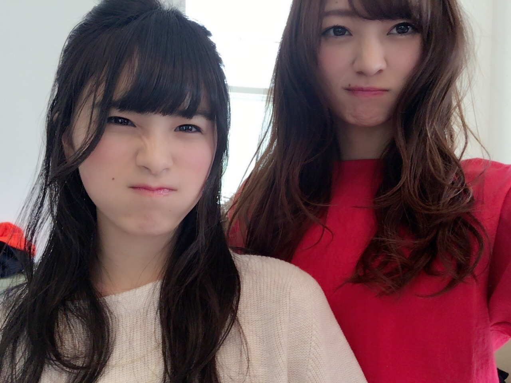
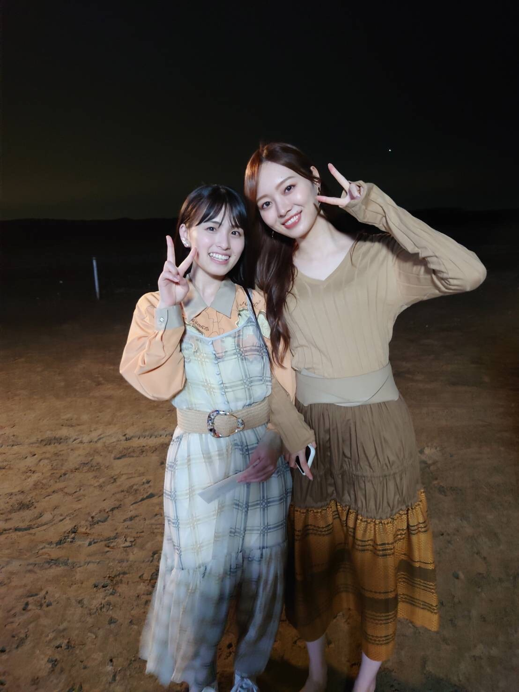
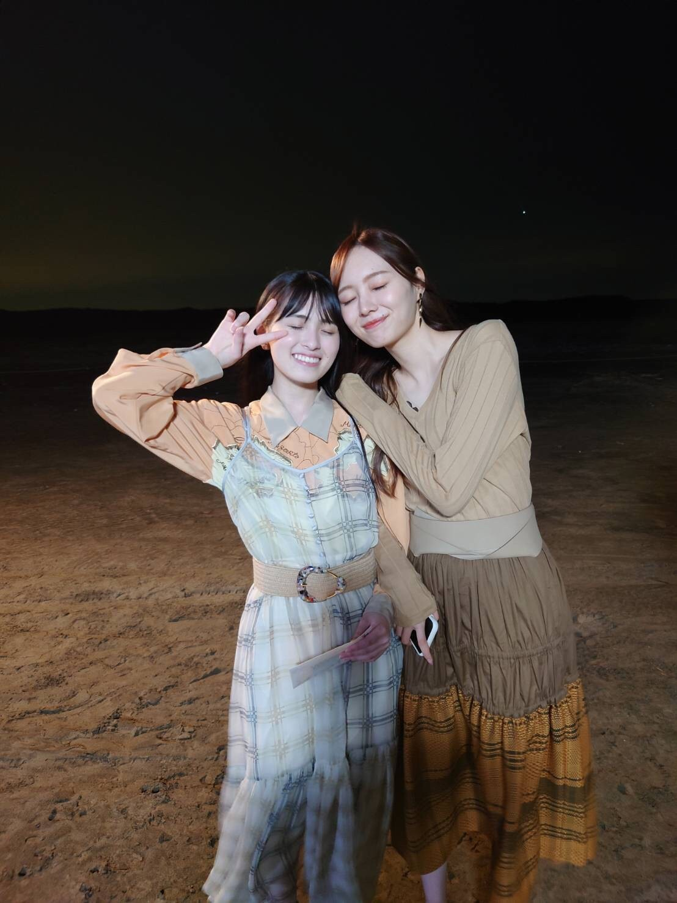

ぴーす！
時間ってこんなにも早く進むのか〜
ゆっくり過ごしているような今も
過去になれば そんな今日も早く感じるもので
結局自分の気分次第みたいなところもあって。
なんとなく、私たちから 卒業 というものは
遠くにあるような気がしていたんです
けど 気づけば５年。
今日で５周年を迎えました︎︎︎︎！︎︎︎︎✌︎
いつも応援ありがとうございます！
３期生おめでとう〜！！
ちゃんと ずっしり
時間と経験を重ねていましたね(^-^)
いつからか 卒業 というものが
私たちにもしっかり 現実味を帯びていました

（4年前くらい、お仕事終わりの帰りの電車で寝てた）
だいぶ前から聞いていた事ではあったけど
ただ心の準備なんてものは存在しなくてですね。
現実だと思いたくなくて( .. )
何度も何度も 止めたと思います。
止めることがいい事だとは思わないけど...
でも、ちゃんとそこには理由があって
ももこはここにいるべき人だよと
何度も何度も伝えてきました。
止める理由を挙げたらキリがないんですよ。
でもきっと ももこは困ったよね、
ごめんね( .. )
それに
私にとって無くてはならない存在で
ずっと側にいて欲しかったんです
これはわがままですね！
ただ、ももこのいない乃木坂人生が
まだちょっと考えられなくて。
わたしはこの先誰の前で弱音を吐き
泣けばいいのだろうとさえ
思ってしまいます。
普通に出会って過ごす５年だったら
きっとここまでの仲に
なっていなかったのかもしれないけど、
ここで出会って過ごした５年だったから
こんなにも想う気持ちが大きくなっていったのかもしれません。
楽しい とか 嬉しい とか
プラスの感情だけじゃなくて
数え切れないくらいの
悲しさとか 悔しさとか 絶望とか
マイナスに感じられるような感情を
お互いに 見て 味わってきた過去が
今の私たちを濃く 強くしてくれたと思います。
これは、今だから言える、
思えることですね(^-^)
一見 仲良くならなそうな
私たちじゃないですか（笑）
お互いに初めは警戒していたのも事実。
ただ、きっかけがあってからはすぐ、
一瞬で壁が壊れた気がします(^-^)

（ふたりで映画見に行って
ひとり２本ずつチュロス買って
始まる前に食べきっちゃった日。
これも4年前くらい。
この顔愛おしすぎません？）
今はももこの笑顔が
ものすごく増えて！
楽しい〜って
前向きな言葉を聞くことも増えて、
そんな姿を見て送り出せるのは
私たちからしたら何よりも嬉しいことであって
そんなももこを見ていると
ホッと、安心します。
わたしは同じ気持ちになると共に
ももこの気持ちが何よりも嬉しくて仕方なかったなあ。

無条件に会えていた今までと
約束 が必要になるこれから。
ちょっと距離は変わるけど
これから先も大切な人には変わりないです！
気持ちの何かが変わる訳では無い！
ただ、お互いの頑張る所が 少し変わるだけ(^-^)
なので大丈夫です！
思い出ファーストのMV、
サプライズでしたよね (^-^)
叶えてくれて本当にありがとうございます...
１２人で叶えられて本当に良かった~
一生宝物の映像になると思います。
きっと色んな節目で見返すことになるだろうなあ。

ももこ〜
頼むから誰よりも幸せになってね
たくさん泣いたぶん
これからは笑顔がもっともっと増えるよ︎︎︎︎！︎︎︎︎✌︎
まだまだももこの人生に
関わっていくき満々だから
ずっとよろしく頼むよ(^^)

本当にありがとう
ずっとだいすきだよ~
Original：https://www.nogizaka46.com/s/n46/diary/detail/63001?ima=4933&cd=MEMBER